כסף רגוע
למשק הבית.
הבנקים, התקציב והעתיד שלכם במקום אחד. תקציב שמראה את הקצב, כלים לכל החלטה גדולה, וכל הנתונים נשארים אצלכם בבית.
Docker לשרת או לנאסמעבד Intel? הורדה לגרסת Intelכל ההורדות והגרסאותנסו את הדמוהקוד בגיטהאב
- כוכבים בגיטהאב
- הורדות
- גרסה
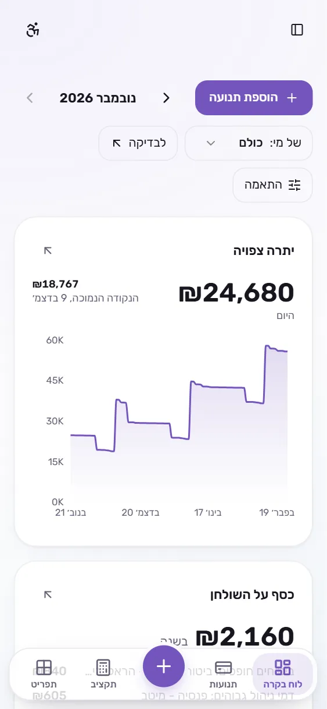
זה פיפ
נסו אותו: גררו, לחצו, או בחרו מצב רוח.
באפליקציה מצב הרוח נקבע לפי הכסף של הבית, לא לפי כפתורים.מראה חדש, וחכמה יותר גם בלי AI.
הגרסה הגדולה עד היום: עיצוב חדש מקצה לקצה, שכבות חכמות שעובדות בלי AI ובלי רשת, ובדיקות על בנק מדומה מקצה לקצה.
מראה חדש
בהיר, כהה או לפי המכשיר. תפריט צד שנשאר במקום, סרגל עליון אחד עם חיפוש והוספה, ותנועה רכה בכל פתיחה וסגירה.
טבלאות במקום כרטיסים
תנועות ותקציב נפתחים ישר בטבלה: כל המסננים בשורה אחת, ותקציב שעורכים במקום עם סימון של קצב החודש.
מרכז ניתוח
תפריט דוחות אחד, טבלת ציר של הוצאות לפי קבוצה וחודש, ושווי נקי לאורך זמן.
פיפ חי
מחכה כשמשהו נשמר, מהנהן כשזה הצליח, מקליד איתכם ועוקב אחרי העכבר. לכל פרופיל תמונה משלו.
כסף על השולחן
סכום אחד בשנה לכל מה שאפשר לחסוך: דמי ניהול גבוהים, ביטוחים כפולים, עמלות, ריבית על מינוס וכסף שיושב בעו"ש. ליד כל סעיף הצעד הבא.
מסווג לבד, בלי AI
מילון של כ-200 בתי עסק ישראליים וזיכרון של מה שלימדתם. AI רק למה שנשאר, אם בכלל.
למה ההוצאות השתנו
החודש מול אותם ימים בחודש הקודם או בשנה שעברה, לפי בית עסק: מחיר, כמות, חדש או חד-פעמי.
חלוקה, מעטפות ודירוג אשראי
מי חייב לכם מה, כמה מההכנסה כבר קיבל תפקיד, ודירוג האשראי שלכם לאורך זמן.
מס בלי לחפש
זיהוי תרומות וזיכוי של 35% לפי סעיף 46, נקודות זיכוי ורמז להחזר מס.
מתעדכנת לבד
ב-Windows הגרסה החדשה יורדת ונבדקת לבד, ומותקנת כשמפעילים מחדש. וגם סיכום בטלגרם שלוש פעמים בשבוע.
כל מה שיש ב-Penny, מסך אחרי מסך.
אלה צילומי מסך אמיתיים מהאפליקציה עם נתוני דוגמה. לחיצה על צילום פותחת אותו בגודל מלא.
כל הבית במבט אחד
לוח בקרה עם אריחים שאפשר להסתיר ולהחזיר: יתרה צפויה, כסף על השולחן, תזרים, מבנה ההוצאות ומי הוציא מה. ומסך פוקוס רגוע למי שרוצה רק את השורה התחתונה.
- צפוי להישאר, וכמה יצא עד עכשיו מתוך התקציב
- מעבר בין חודשי השנה בלחיצה
- הוספת תנועה במזומן בשנייה
- פיפ מראה אם משהו דורש טיפול, והצעד הבא מוצג מתחת

כל התנועות, מכל הבנקים והכרטיסים
סנכרון אוטומטי מ-18 בנקים וחברות אשראי, או ייבוא מקובץ. הכול ברשימה אחת, מסודרת לפי שבועות ובצבעי הקטגוריות.
- חיפוש, סינון לפי קטגוריה, פיצול ותגיות
- תור "לבדיקה" לתנועות חדשות, והתחשבנויות בנפרד
- AI לבחירתכם מסווג תנועות, או בלי AI בכלל
- כללים אוטומטיים לבתי עסק שחוזרים

תקציב שמראה את הקצב, לא רק את הסכום
לכל קטגוריה יש תקציב, כמה כבר יצא וכמה נשאר. אפשר לבנות תקציב מהממוצע שלכם בלחיצה אחת.
- לאן הכסף הולך, לפי קטגוריות
- תצוגת 50/30/20
- סיכום לפי חודש, רבעון, חצי שנה ושנה, כולל שיעור חיסכון
- לוח שנה של חיובים צפויים וחיובים קבועים

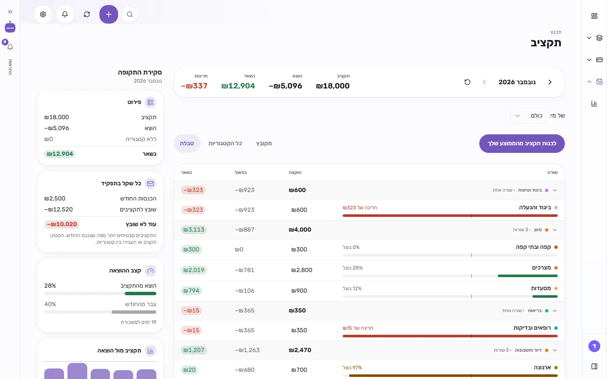

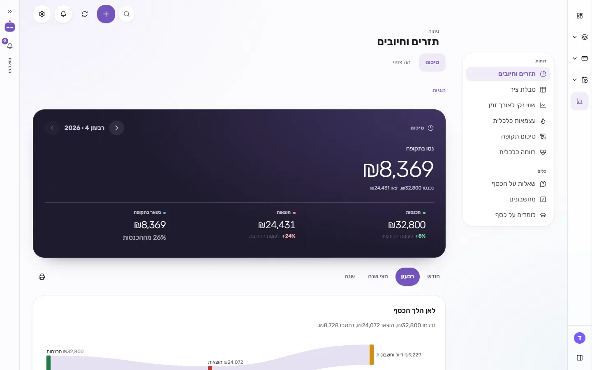

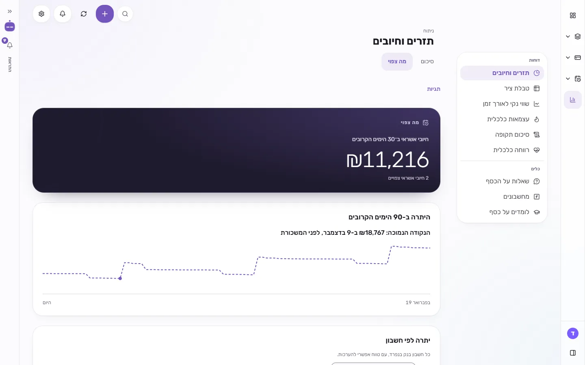
השקעות, עצמאות כלכלית ושלבי החיים
השווי הנקי של הבית במקום אחד, ולצידו תכנון קדימה: מתי הכסף יוכל לפרנס אתכם, ומה כדאי לסדר בשלב שבו אתם נמצאים.
- נכסים, התחייבויות ושווי נקי
- הקצאה לפי סוג ומטבע, והשוואה ל-S&P 500 ולת"א 125
- מחשבון עצמאות כלכלית עם אירועים בחיים ויעדים
- רשימות לפי שלב חיים, עם קישורים למקורות רשמיים

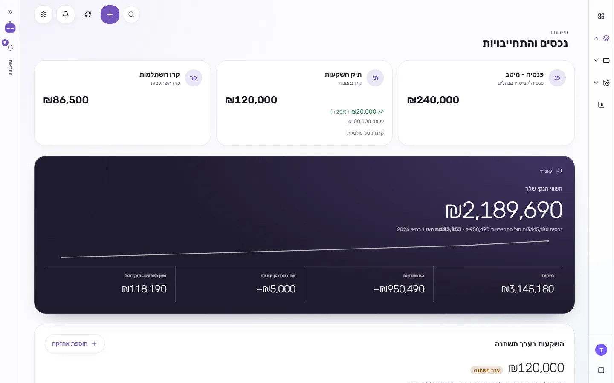

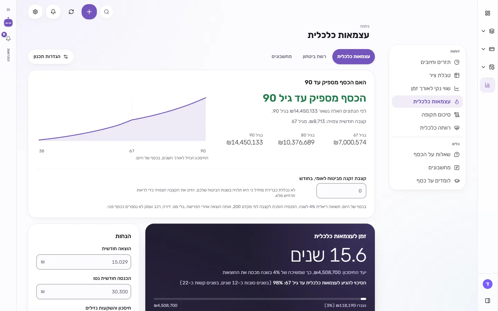

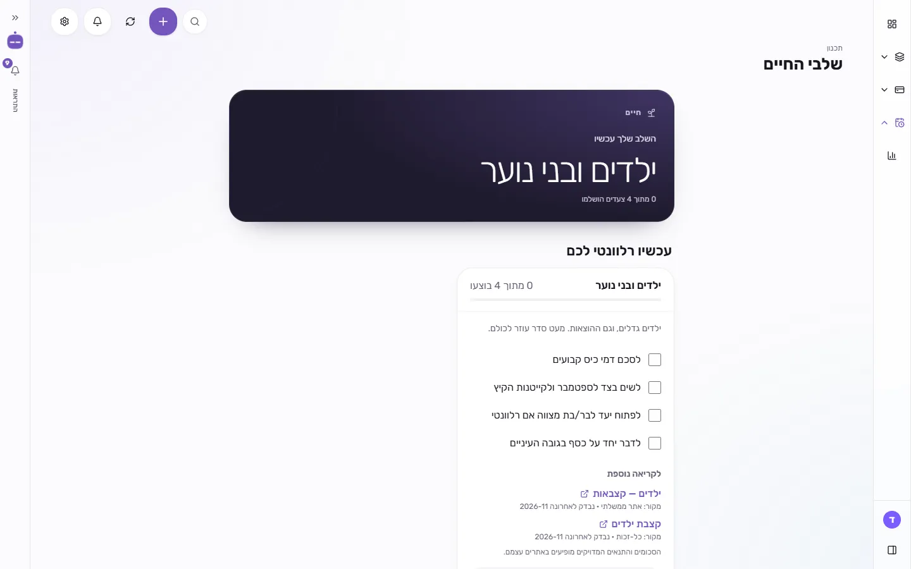
נוח ביד אחת, כמו אפליקציה.
Penny מתאימה את עצמה לטלפון, לטאבלט ולמחשב. בטלפון יש סרגל תחתון, כפתור הוספה צף ומסכים שנגללים באגודל. הגישה מהטלפון עוברת ברשת הביתית, רק אחרי שהפעלתם אותה ועם קוד.
- חמש לשוניות למטה: לוח בקרה, תנועות, תקציב, חשבונות ותפריט
- ערכה כהה וערכה בהירה
- אפשר להתקין כאפליקציה במסך הבית של הטלפון


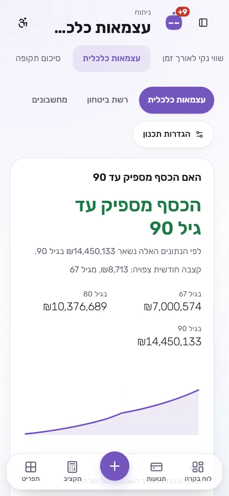


משק בית אחד, וכל אחד עם המסך שלו
Penny בנויה לבית שלם, לא למשתמש בודד. הנתונים משותפים, וההעדפות אישיות.

פרופילים למשפחה
מסך "מי משתמש?", משק בית אחד משותף, וכל אחד עם הסידור והנגישות שלו.
לשאול את הכסף
"כמה הוצאתי על אוכל בחודש שעבר?" בשפה רגילה, וגם בוט טלגרם עם משוב מיידי.
נגישות מלאה
תפריט נגישות (Alt+A) והצהרת נגישות לפי ת"י 5568 ו-WCAG 2.2 AA.
מצב פרטיות
לחיצה אחת מסתירה את כל הסכומים, למשל כשמישהו מציץ במסך.
התשובות שבאמת חשובות כאן.
יותר מ-25 מחשבונים וכלים מודרכים, מרכז ידע, ובדיקות תקופתיות. כל כלי מציין לאיזו שנה הנתונים שלו נכונים, והקוד מפנה למקור.

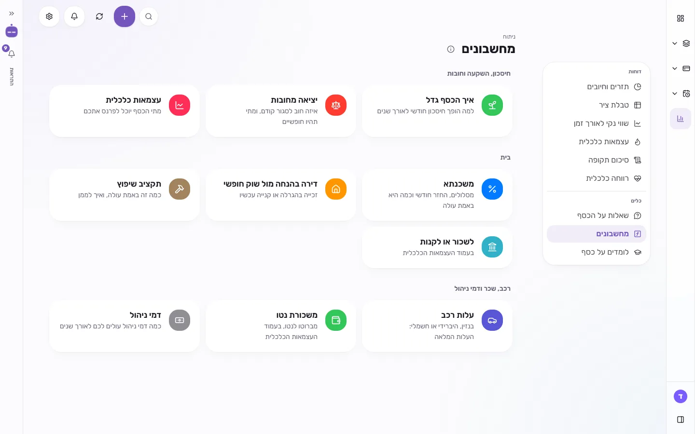
מחשבונים

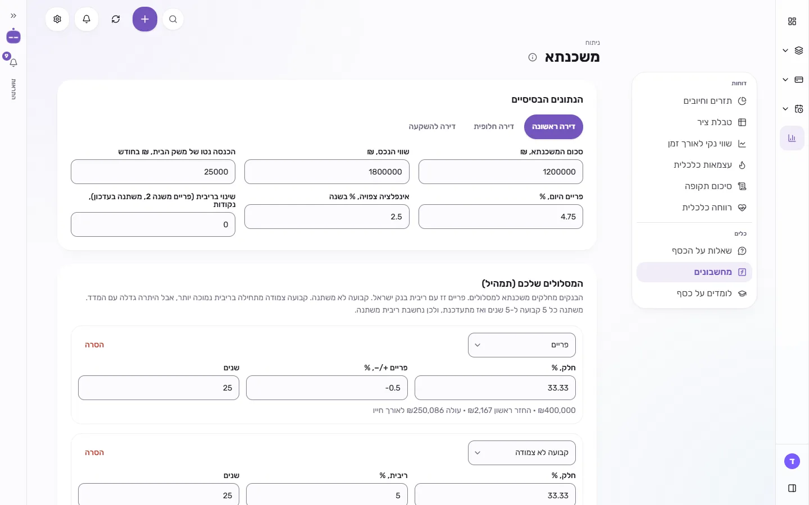
משכנתא

מרכז ידע

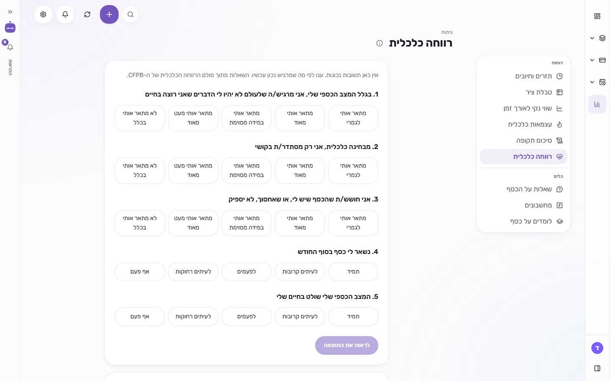
בדיקת רווחה

סיכום חודשי

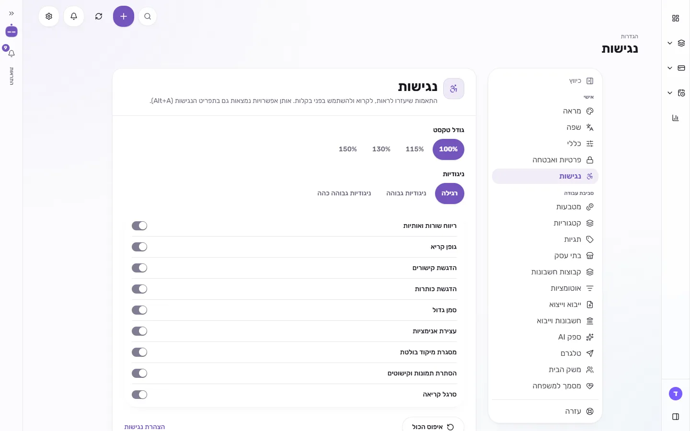
נגישות
הנתונים שלכם לא עוזבים את הבית.
האפליקציה רצה על המחשב שלכם ומאזינה רק לכתובת המקומית. הנתונים יושבים בקובץ אחד שאפשר לגבות, עם גיבוי אוטומטי לפני כל שינוי במבנה. שום דבר לא נשלח החוצה, חוץ מהבנק עצמו וספק AI אם בחרתם כזה.

רץ אצלכם במחשב
שירות קטן ברקע. גישה מהטלפון רק בהפעלה מפורשת ועם קוד.
LOCALHOST ONLYהסיסמאות נשארות אצלכם
פרטי ההתחברות לבנק מוצפנים בקובץ מקומי, והאפליקציה ננעלת.
AES-256-GCMאתם בוחרים את ה-AI
Claude, Ollama מקומי, או בלי AI בכלל.
CLAUDE · OLLAMA · OFFמה שכולם שואלים לפני שמתקינים.
זה בטוח לתת לאפליקציה את הסיסמה לבנק?
הסיסמה נשמרת רק על המחשב שלכם, מוצפנת ב-AES-256-GCM, ונשלחת רק לאתר של הבנק עצמו בזמן הסנכרון. אין שרת של Penny שהיא עוברת דרכו. אפשר גם להפעיל נעילה עם סיסמה, ואז מפתח ההצפנה עצמו לא נשמר על הדיסק בלי הסיסמה שלכם. הקוד פתוח, כך שכל אחד יכול לבדוק מה הוא עושה.
לאן הנתונים שלי הולכים?
לשום מקום. האפליקציה רצה על המחשב שלכם, מאזינה רק לכתובת המקומית 127.0.0.1, וחוסמת בקשות מאתרים אחרים. נתונים יוצאים רק אם בחרתם בזה: לספק AI בענן אם בחרתם בו (או בכלל לא, עם Ollama או בלי AI), ולטלגרם אם חיברתם בוט.
מה קורה אם המחשב מתקלקל?
אפשר להגדיר גיבוי אוטומטי מוצפן לתיקייה ש-Google Drive, OneDrive, Dropbox או iCloud מסנכרנים. הקובץ נפתח רק עם סיסמת הגיבוי שלכם, ושחזור מחזיר את כל הנתונים, כולל הגישה לחשבונות.
כמה זה עולה?
כלום. Penny היא קוד פתוח ברישיון MIT, בלי מנוי, בלי פרסומות ובלי גרסה בתשלום. AI בענן, אם תבחרו בו, עולה שבריר שקל לסנכרון ישירות לספק.
זה עובד עם הבנק שלי?
סנכרון אוטומטי עובד עם 18 בנקים וחברות אשראי בישראל, וגם בנקאות פתוחה. כל השאר נכנס מקובץ CSV או Excel, או בהדבקה של טבלה.
זה מותר?
משיכת נתונים אוטומטית מאתר הבנק עלולה להפר את תנאי השימוש של הבנק. Penny נועדה לשימוש אישי בחשבונות שלכם בלבד, על המחשב שלכם. לא מפעילים אותה כשירות עבור אחרים.
יש אפליקציה לטלפון?
אין אפליקציה בחנות, אבל אפשר לפתוח את Penny מהטלפון ברשת הביתית (בהפעלה מפורשת ועם נעילה) ולהתקין אותה למסך הבית. יש גם בוט טלגרם עם סיכום שלוש פעמים בשבוע.
צריך להבין במחשבים?
לא. ב-Windows ו-Mac מורידים קובץ התקנה ומפעילים, בלי טרמינל. ב-Windows האפליקציה גם מתעדכנת לבד.
ארבע דרכים להתחיל.
בפעם הראשונה, תהליך פתיחה קצר מלווה אתכם: פרופיל ופיפ, חיבור בנק או ייבוא קובץ, יעד חודשי ותקציבים.
macOS
מורידים את קובץ ה-dmg (ל-Apple silicon או ל-Intel) וגוררים ל-Applications. בפתיחה הראשונה: הגדרות המערכת ← פרטיות ואבטחה ← לפתוח בכל זאת.
להורדהDocker
הכול בקונטיינר מבודד, עם עדכון וחזרה אוטומטית לגרסה הקודמת אם משהו לא תקין.
docker compose up -d --build
מקוד המקור
מתקין שירות שרץ תמיד, ואפליקציה בשורת התפריטים ב-macOS וב-Windows.
git clone https://github.com/Sergey-Bar/Penny.git cd Penny && npm install npm run setup
זה כלי אישי לחשבונות שלכם בלבד. משיכת נתונים אוטומטית מבנקים עלולה להפר את תנאי השימוש שלהם. המחשבונים נותנים הערכה, לא ייעוץ.